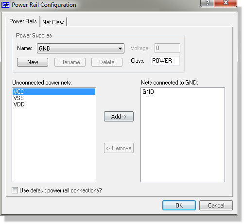
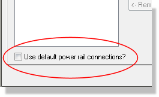
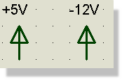
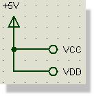

Proteus provides a special dialogue form for viewing and/or modifying the power supply connectivity within your designs. This allows you to create one or more power supplies and then to specify bindings between power supply nets and the actual power supplies. This is particularly useful for handling designs in which there are ICs with hidden power pins as you can then determine exactly what power nets there are in the design and also specify interconnections between them where appropriate.
Each power supply has associated with it a Voltage which is used during simulation, and a Routing Class which determines the PCB design rules that will be used for all nets bound to the power supply.
The Power Rail Configuration dialogue form is divided into two sections. The top section labelled Power Supplies allows you to create, edit and delete named power supplies whilst the bottom section allows you to view and manipulate the power nets that are bound to each power supply. In a correctly configured design, there should be no unconnected power nets.
Context sensitive help is provided for the individual controls on the form.

Power Rail Configuration Dialogue form
Where more than one net is bound to a power supply, these nets will then be treated as interconnected for both simulation and PCB layout. The Power Rail Configuration dialogue form thus provides a means to specify interconnections between power nets that have been created by the hidden power pins of TTL and CMOS logic ICs and NMOS microprocessor parts. In particular, some parts have pins VCC/GND and some have VDD/VSS and it is very common to need an interconnection between VCC/VDD and VSS/GND.
To make life really simple for new users, Proteus provides a default power rail configuration. This is specified in the file PWRRAILS.INI as follows:
| POWER SUPPLY | VOLTAGE | NET BINDINGS |
NET CLASS |
|
VCC/VDD |
+5.0 |
VCC/VDD |
POWER |
|
VEE |
-5.0 |
VEE |
POWER |
|
GND |
0 |
GND, VSS |
POWER |
When you create a new design, these rules will be applied automatically. Note also that the default power supplies and their associated bindings cannot be renamed or deleted unless you uncheck the Use Default Power Rail Connections checkbox on the Power Rail Configuration dialogue form.

Note that the GND power supply can never be renamed or deleted and its voltage is fixed at 0V. You can, however, edit the routing class.

Power Rails specified on the schematic
You can also specify power supplies and power rail bindings on the schematic. On-schematic power supplies are created by placing power terminals with labels such as +5V or -12V.
Power supplies created in this way cannot be renamed or deleted from the dialogue form and the voltage cannot be changed. You can, however, still edit the routing class. Note also that power terminals of this type create both a power supply and a power net so you will also see a fixed binding between the +5V net and the +5V supply, for example.

On Schematic Power Rail Bindings
You can also specify on schematic net bindings. For example, if you wanted to connect VCC and VDD to +5V on the schematic you would draw wiring that interconnected logical terminals labelled +5V, VCC and VDD. Note that, in this case, any hidden VCC and VDD pins would acquire the +5V supply as well.
Designs created with old Proteus versions prior to 6.6 will not contain power rail configuration data and will load with the Use Default Power Rail Connections option cleared.
To enable the power rail configuration features for old designs, you should visit the Power Rail Configuration dialogue form and then click the Use Defaults checkbox. At this point, the power rail configuration features will be enabled, and you must then ensure that all power nets are bound to a power supply.